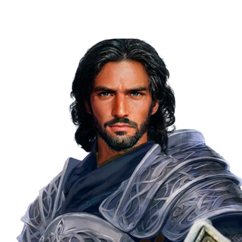

Soran es un Humano Paladín de la Venganza para los Caballeros de Solamnia nacído en los desiertos de Khur hasta su esclavizamiento y posterior liberación por parte de un caballero de Solamnia al que le juraria unirse a su causa.
| Soran Ishmail | ||
|---|---|---|
|  | ||
| tipo | Personaje de Jugador | |
| jugador | Santiago | |
| informacion | ||
| nombre | Soran Ishmail | |
| titulos | Caballero de Solamnia | |
| tambien conocido como |
|
|
| tipo criatura | Humanoide | |
| raza | Humano | |
| clase | Paladín | |
| juramento | Juramento de Venganza | |
| edad | 34 años | |
| idiomas |
|
|
| Estado | ||
| estado | vivo | |
| Estadísticas | ||
| Nivel | 6 | |
| HP 50 |
AC 21 |
DC 13 |
| FUE 18 |
DES 12 |
CON 14 |
| INT 8 |
SAB 10 |
CAR 14 |
Soran es un Humano alto y fornido, proveniente de Khur su piel es morena y pelo negro, notorios ojos claros y una mirada seria.
Soran es un hombre serio, leal y estricto, despues de sus antigüas experiencias se obligó a si mismo a ser mejor que los demas e intentar demostrar que el mundo puede ser mejor.
Soran Ishmail nacio en los desiertos de Khur donde vivío gran parte de su infancia hasta caer preso de unos bandidos que lo esclavizarian durante años hasta su liberación por parte de un caballero de Solamnia que sacrificaría su vida y al que juraria unirse a su causa.
Tras su liberación vagó durante días por el desierto sin encontrar nada hasta que cierto día en su momento más bajo y con pensamientos de rendirse tuvo una experiencia extrasensorial donde conoció al dios de la justicia Kiri-Jolith del que se convertiría en avatar y fiel seguidor.
Yendo a la capítal Soran embarcó en una nave voladora donde por casualidades del destino se acabría encontrando con el grupo que acompañaria de aventuras formado por Zoldack, Nakai, Aldo y Eris también se encontró con los caballeros de Solamnia Becklin Uth Viharin y Ispin Escudoverde estos cuales le ayudarían a formarse como Caballero de Solamnia y entablecería una gran amistad.
Tras su proceso de formacíon fue contactado de nuevo por Becklin aunque esta vez con malas noticias ya que se trataba de una invitación al funeral de Ispin el cual murío por causas naturales.
Una vez reunido con sus futuros compañeros en el pueblo de Vogler, pueblo natal de Ispin atendió al festival del Martin Pescador donde conoció a su futuro pupilo y actual de Becklin Darret Aguasaltas. Como regalo por su amistad Ispin le dejó a Soran su famoso escudo verde el cual supuestamente consiguio derrotando a un temible Dragon.
Durante este festival se reencarno entre sus habitantes la famosa Batalla de la Colina, batalla que ocurrió en ese mismo lugar donde el Ejercito de Kalaman contrarrestó las fuerzas ardientes del Ejercito del Dragón. Fue durante este evento cuando el equipo de mercenarios contratado por la Alcaldesa era un grupo de mercenarios del Ejercito del Dragon que había resurgido y engañó a la Alcaldesa para poder tomar el pueblo.
Tras varias horas de lucha incesable se consiguió parar la primera avanzada del ejercito donde incontables bajas ocurrieron ya que el pueblo de Vogler no tenía casi ningun soldado.
Viendo la inevitable carga contra el pueblo el grupo junto a los supervivientes del pueblo decidieron huir mediante los botes rio abajo con fé de llegar a la Capital de Kalaman durante esa huida aparecío la general Kansaldi Ojos de Fuego del Ejercito del Dragon cabalgando un Gran Dragon Rojo con el que prendería fuego a todo el pueblo y intentar parar la huida hasta que Nakai decidió sacrificar su vida por que el grupo escapase.
Fue aqui donde Soran consumido en su rabia formó el juramento de Venganza jurando acabar con la vida de Kansaldi en nombre de Nakai y el pueblo de Vogler.
| Simbolo Sagrado | Collar con cuernos de Kiri-Jolith |
| Escudo Verde | Escudo +1 de Ispin Escudoverde |
| Armadura de Placas | Armadura de los caballeros de Solamnia |
| Lanza oxidada | Dragonlance maldita de Sarlarmir |